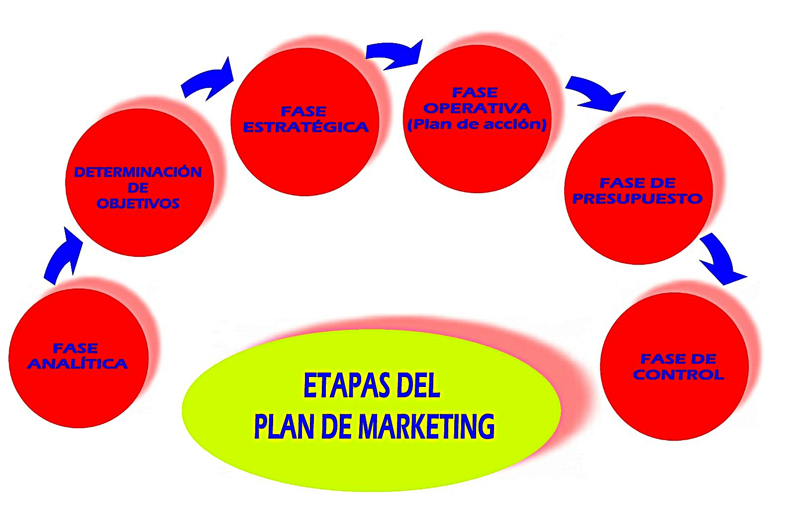

Conviene destacar que este es un aspecto relacionado con acciones de marketing, algo ya sobradamente abordado, y sobre el que no se precisa, prácticamente, volver a insistir. El Plan de Marketing está compuesto por las diferentes estrategias o herramientas de las que se dispone para llevar a cabo esta importante cuestión de la comercialización.
Las diferentes herramientas están compuestas por técnicas y estrategias sobre las que se desarrollan las acciones comerciales. Todo ello, se relaciona a lo largo de un documento conocido como el Plan de Marketing.

El plan de marketing es un documento escrito que debe contener:
La delimitación de los objetivos, que constituyen el punto de llegada de cualquier planificación estratégica de la empresa hotelera.
El análisis de la situación, tanto interna como externa, es decir, de la empresa hotelera y del mercado o el entorno, que se gestionará a partir del análisis DAFO.
La definición de estrategias, que atienden al conjunto de acciones planificadas sistemáticamente en el tiempo que se llevan a cabo para lograr un determinado fin.
Los planes de acción, que son consecuencia de las estrategias.
Los presupuestos de los diferentes planes de acción, lo que supone una cuantificación numérica de los diferentes procesos.
Las medidas de control donde se incluyen todos aquellos mecanismos e indicadores que sirven para verificar el grado de cumplimiento de los objetivos planificados.
La corrección de desviaciones, que sirven para actualizar los planes a medida que los indicadores registran datos que no son acordes con lo esperado.
El diseño de las acciones comerciales tendrá lugar en la etapa estratégica del plan, y se desarrollará a lo largo de la fase operativa, como puesta en marcha, y la fase de control, para la evaluación de los resultados.